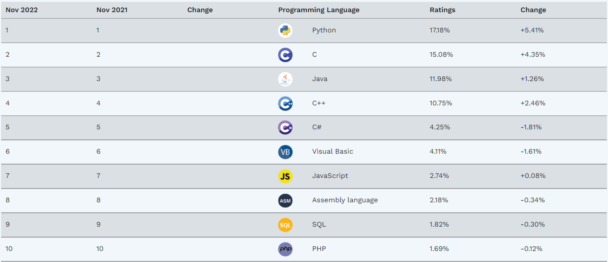
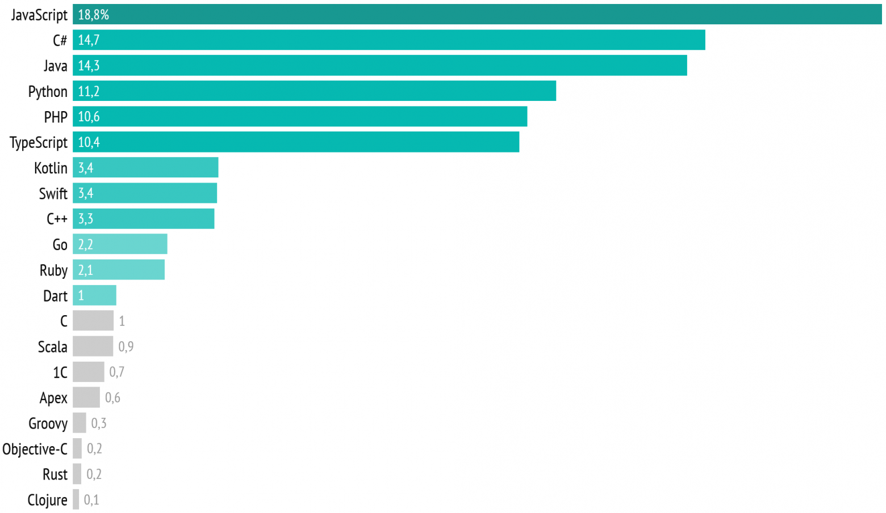

Рейтинг языков программирования 2022
Индекс TIOBE
Индекс TIOBE (TIOBE programming community index) — индекс, оценивающий популярность языков программирования, на основе подсчёта результатов поисковых запросов, содержащих название языка.
По состоянию на ноябрь ситуация,согласно TIOBE.COM, такая: Первое место у Python
Python — лидер рейтингов языков программирования последних лет — стал популярен за счёт своего простого синтаксиса и универсальности.
Для чего нужен Python и с чего начать его изучение. Первая версия пайтона появилась в 2008 году, хотя его разработка началась еще в конце 80-х годов. Язык популярен как среди новичков, так и у профессиональных девелоперов, а ещё без него никуда в Data Science и продвинутой аналитике. Его используют в своих разработках такие гиганты как Google, Amazon и Spotify. YouTube, например, полностью написан на Python. Ещё одно преимущество языка — огромное количество библиотек и развитое дружелюбное сообщество.
- веб-разработка;
- аналитика, Data Science;
- системное программирование;
- машинное обучение;
- геймдев;
- скриптинг;
- разработка мобильных и десктопных приложений;
- системное программирование.
Язык C- 2 место
Универсальный язык программирования С существует уже достаточно давно, но не теряет свою актуальность. Он появился еще в 70-х годах прошлого века для разработки ОС UNIX и до сих пор популярен среди системных программистов. Язык Си для изучения, как правило, выбирают те, кто хочет глубже понимать, как работает «железо».
3 место у Java
Java, тоже неизменно возглавляющий топ языков программирования, получил своё название от сорта кофе и изначально был создан для программирования бытовой электроники. Сейчас это один из самых распространённых и популярных языков, который используют для создания самого различного софта.
источник: digital-academy.ruОднако, согласно источнику habr.com, рейтинг популярных языков программирования следующий:
